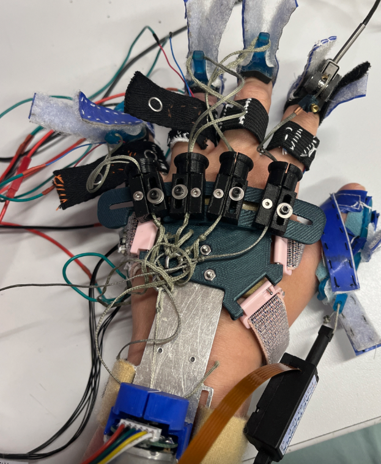
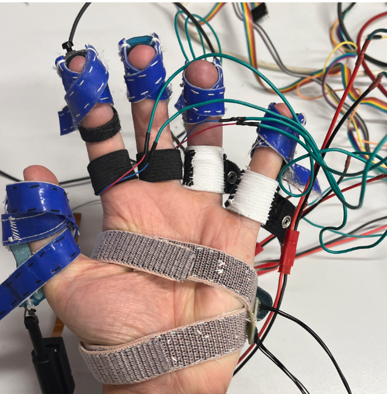
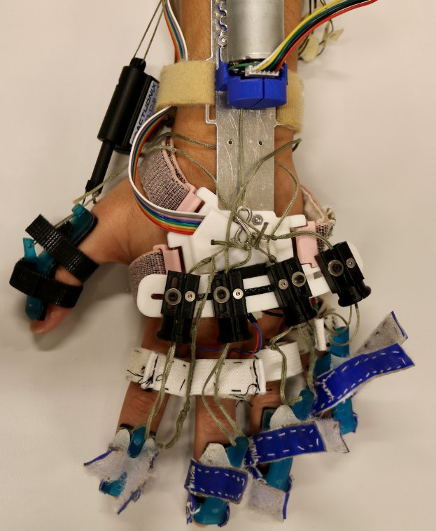
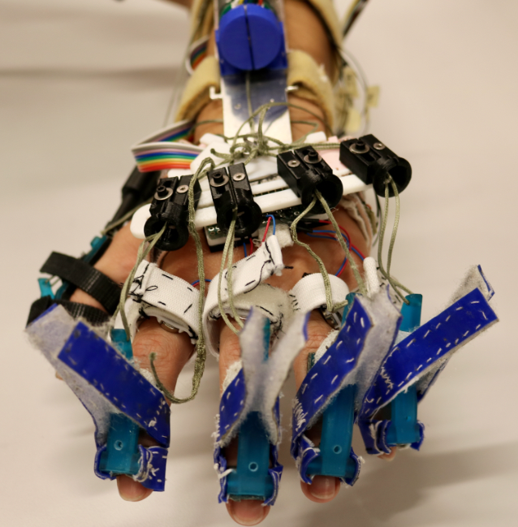

MyHand-RLX

The MyHand-RLX incorporates small scale vibration motors into the MyHand Robot. I developed a modular mounting system for the vibration motors centralizing and strengthening electrical connections. This decreased robot don and doff times during patient testing session and ensured connections were robust enough to endure testing procedures and transportation.
The MyHand Orthosis Robot

The MyHand Orthosis Robot is a stroke rehabilitative device which allows patients to regain the dextrous ability of their hands and fingers to grip and hold objects. The robot attaches to the users DIP and PIP segments and extends the fingers via a pulley system. The EMG arm band reads and interprets the microvolt signals of the arm via a machine learning algortihm to open and close the hand based on the patients' input.
Patient Usage
Stroke patients often experience high levels of spcticity in their hands where the muscles within the hand and arm become extremely stiff. This causes involuntary contraction leading to clenched fists, limited finger movement and overall impairment within their daily lives.

Incorporating Vibration
With their Touché Glove, the Stanfrod CHARM lab demonstrated that vibration pulses applied at random intervals and periods worked to provide patients with spacticity relief. In partnership with the CHARM lab, we worked to incorporate the glove's vibration motors and controller into the MyHand Orthosis Robot.
Stanford Touché Glove
The original integration worked, but it was bulky and difficult to assemble onto the patient around the already donned MyHand Robot. Further when the MyHand Robot opened the patients' hand the palm and fingers consistently lost contact with the vibration motors. Note tha the Touché Glove was originally designed for and tested on patients with hands in a closed state rather than open.
Refining the Vibration Motor Integration
Version 2 worked to localize a single vibration motor to each finger, as well as, integrate the motors within the straps used to bind the robot to the patients' hand. This bypassed the need for the Touché Glove, decreasing the bulk and alowing for constant contact between the fingers and motors.
However, due to the messy and very long electrical connections, the vibration motors were prone to breaking during assembly, usage, and transport. The multitude of long wires made donning the robot onto the patients' hands extremely tedious and time consuming which is an issue within the time constrained patient sessions. During the patient sessions, there is only a 15 minute window where the robot must be assembled onto the patient and calibrated. Failure to ready the robot within this time frame has been shown to negatively influence spacticity, skewing the data collected within the latter half of the study.
Therefore, there was a need for a reliable way to quickly insert and remove the vibration motors into and from the MyHand Othosis Robot to decrease overall assembly time and the constant need for repairs. Version 3, titled the MyHand-RLX Orthosis Robot, addresses these issues with a modular vibratior motor mounting system.
Version 2: Improved (But Messy) Integration
 Version 3: Optimal Modular
Integration


Modular Vibration Motor Mount

Design Intent
To create a robust modular mounting system for the vibration motors, 3 new features were designed and implemented:
- A cartidge-like protoboard for easy insertion into and removal from robot assembly.
- The centralization of the vibration motor connections to a local hub.
- A new soft adjustable elastic band to mount the motors to the patient's fingers.
Cartridge-Like Protoboard
I devised a cartidge-like protoboard to allow for the seamless integration of the vibration motors within the overall robot. For this, I designed and constructed a custom protoboard with four 2-pin female connectors to which the vibration motors attach. The vibration motors now used a more compact and direct connection method. This key update enabled shorted more direct wiring, more secure and easily accessible connections, and it shifted the point of failure - if the wires are snagged, the motors simply detach from the connector instead of placing stress on or bending the wires.

The cartridge, to which the protoboard mounts, was designed in Solidworks and FDM printed. It features

Local Connection Hub

A centralized local hub was implemented to organize and streamline connections between the vibration motors and their controller. The wiring form the controller was soldered to an 8 pin female connector which is designed to recieve the corresponding male connector pins within the catridge-like protoboard
Results & Reflections
The final mount reduced transmitted vibration by over 60% in the target frequency range (10–80 Hz). Its modularity allows adaptation to various devices, and future iterations may include tunable damping using magnetorheological fluid or smart elastomers.